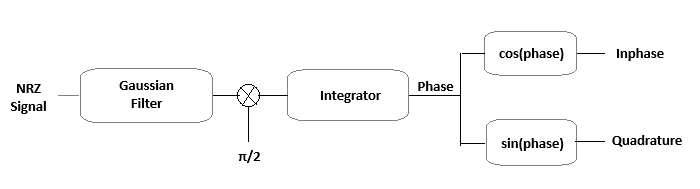

Instructions for Gaussian Minimum Shift Keying Modulation (GMSK)
Note: Use the input fields to enter the number of bits, carrier frequency (Hz), Time-Bandwidth Product (BT), and the baud rate (Hz)
Step 1: Click on 'Generate Message' button to generate input message signal
Step 2: Then click on 'Generate NRZ Signal' button to generate NRZ signal
Step 3: Then click on 'Generate Filtered Signal' button to generate Gaussian filtered signal
Step 4: Click on 'Generate Carrier' button to generate carrier signal
Step 5: Click on 'Generate GMSK Signal' button to generate Gaussian Minimum Shift Keying Signal
In GMSK, the filtered NRZ signal (which is now smoothed by the Gaussian filter)
is integrated over time to produce a phase signal. This is the key step that ensures
continuous phase transitions, which is the hallmark of GMSK. The integration ensures that the phase of the carrier changes
gradually, avoiding abrupt phase transitions and maintaining phase continuity.

Instructions for Gaussian Minimum Shift Keying (GMSK) Demodulation
Step 1: You can Demodulate the GMSK Signal clicking on the 'Demodulate GMSK' button
In GMSK demodulation, the low-pass filter (LPF) removes high-frequency noise, isolating the baseband signal. The phase estimator extracts the signal's phase, which carries the encoded data. The deviator converts phase changes into
frequency deviations to retrieve the transmitted data, and the decision circuit interprets these deviations, converting them into binary data (0s and 1s) based on set thresholds.